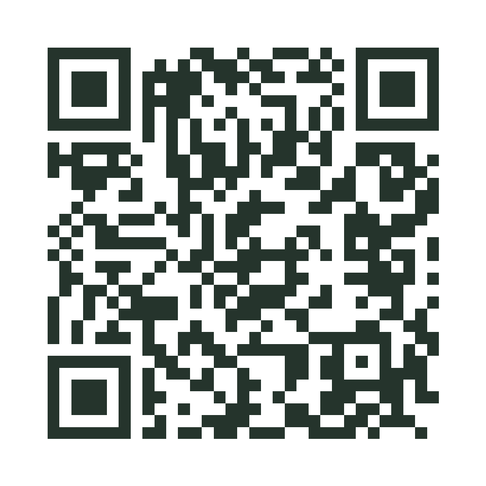
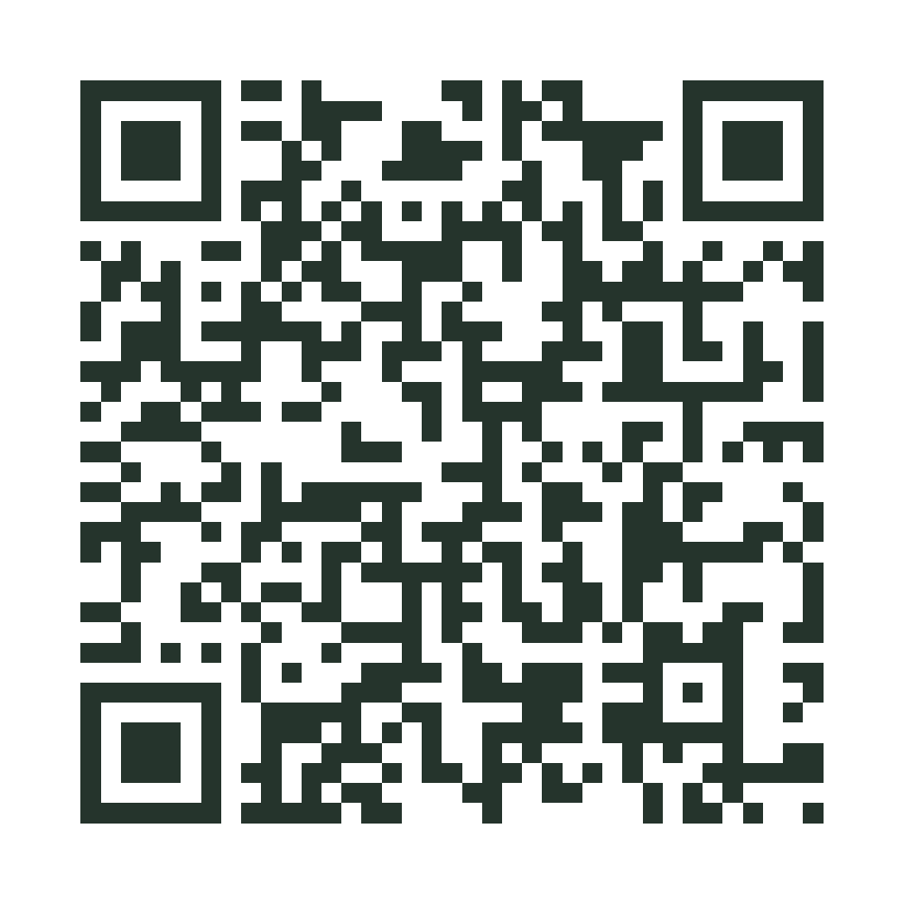
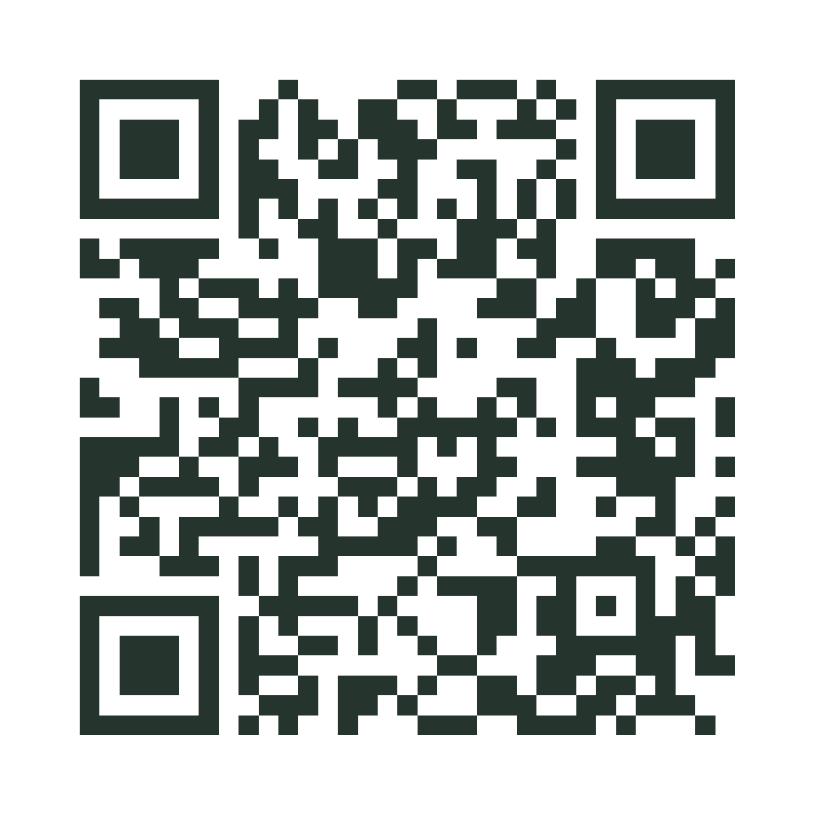
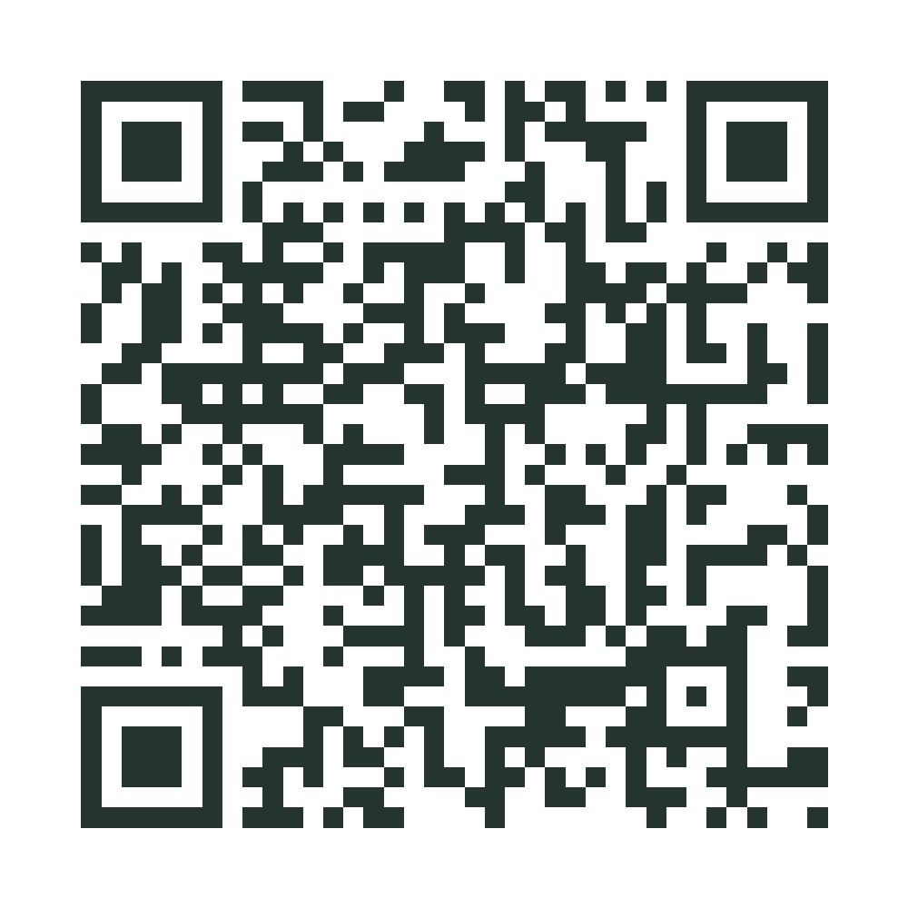

Gửi Bảo Uyên
Lê Thanh Bảo Uyên
Khiêm gửi Uyên một tấm thiệp nhân ngày 20/10.
Mã QR & đường dẫn

Chúc mừng 20/10
Mỗi người một lời chúc riêng. Khiêm gửi.
Gửi Bảo Uyên
Khiêm gửi Uyên một tấm thiệp nhân ngày 20/10.

Gửi chị Kim Phượng
Em gửi chị một tấm thiệp, kèm vài lời chúc nhân ngày 20/10.


Gửi Huyền Dịu
Một tấm thiệp Khiêm làm riêng cho Dịu nhân ngày 20/10.


Gửi chị Nguyệt Ánh
Em có vài lời chúc gửi chị, qua một tấm thiệp nhỏ.
